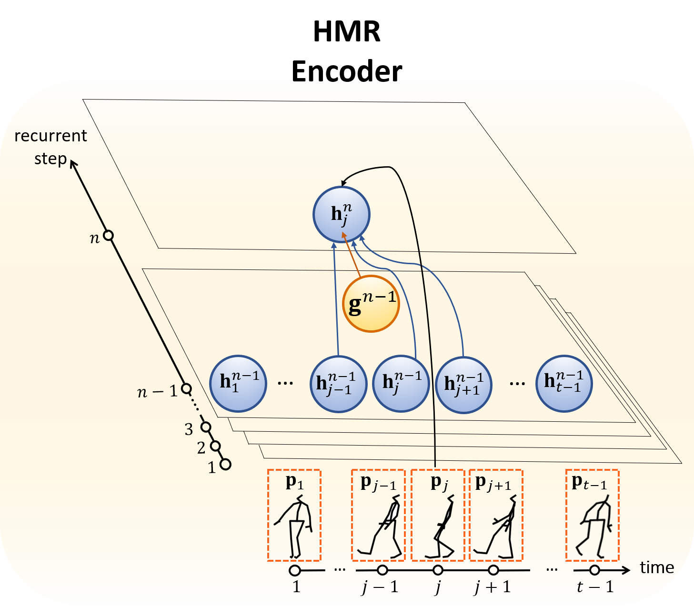
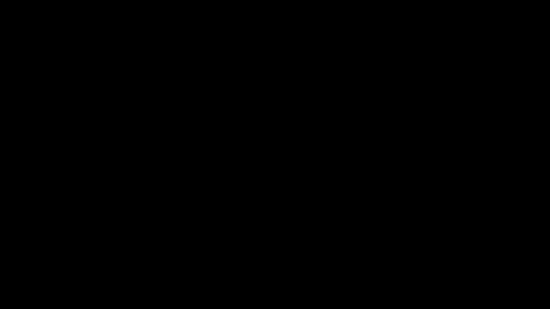
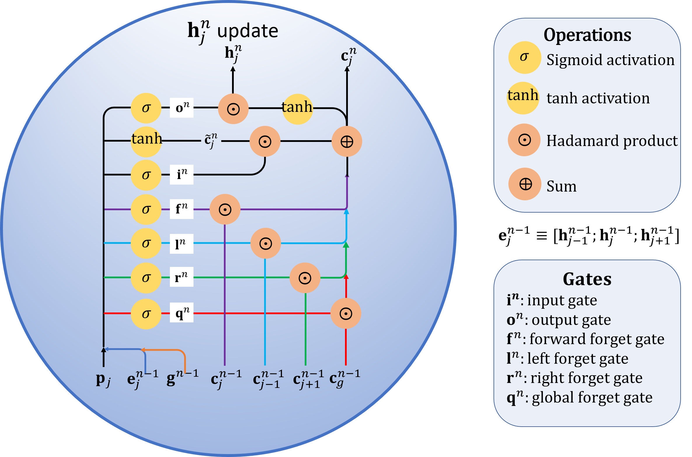
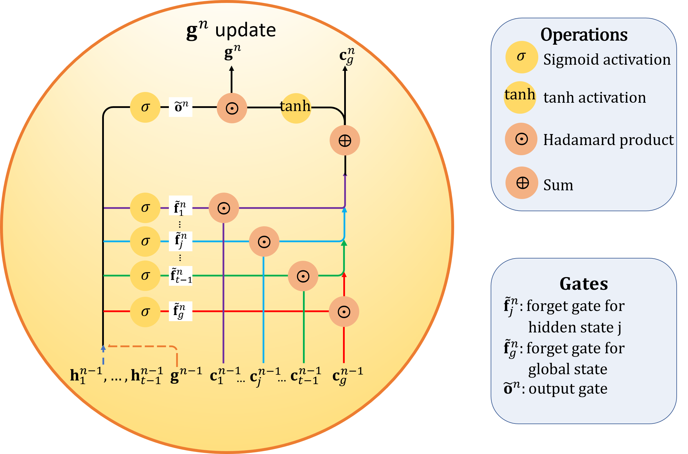

Method
The input motion sequence consisting of $t$ frames is first parameterized with Lie algebra parameters, i.e. instead of representing a motion frame in terms of the raw 3D coordinates, we represent it in terms of kinematic chains of axis angles parameters relating the rotation of connected bones. The resultant pose sequence $\langle \mathrm{\mathbf{p}}_1, \cdots, \mathrm{\mathbf{p}}_t\rangle$ is then passed to a sequence-to-sequence model that encodes its motion context and a decoder then generate predictions for $\langle \mathrm{\mathbf{p}}_{t+1}, \cdots, \mathrm{\mathbf{p}}_T\rangle$.
In conventional motion prediction models, the encoder and decoder usually consist of single or stacked layers of LSTM or GRU cells. The inputs must be processed sequentially and the final hidden state tends to be dominated by the inputs at recent frames and cannot properly capture long-term dependencies. Consequently, predicted motion tends to converge to motionless states.
To effectively model motion dynamics, we propose a Hierarchical Motion Recurrent (HMR) network as the encoder, where the entire input sequence of poses is fed one-shot instead of successively. The motion contexts are modeled by
- $t-1$ frame-level hidden states, $\left\{\mathrm{\mathbf{h}}_{j}\right\}_{j=1}^{t-1}$ corresponding to each individual frame,
- $1$ sequence-level global state $\mathrm{\mathbf{g}}$ corresponding to the entire sequence.
$\mathrm{\mathbf{h}}_{j}$ and $\mathrm{\mathbf{g}}$ capture local and global motion contexts, respectively.

The detailed state transitions are as follows.

×

\begin{equation}
\begin{aligned}
&\mathrm{\mathbf{e}}_j^{n-1} = \left({\mathrm{\mathbf{h}}_{j-1}^{n-1}}^\intercal, {\mathrm{\mathbf{h}}_{j}^{n-1}}^\intercal, {\mathrm{\mathbf{h}}_{j+1}^{n-1}}^\intercal \right)^\intercal \\
&\mathrm{\mathbf{f}}^n = \sigma\left(\mathrm{U}_f \mathrm{\mathbf{p}}_j+\mathrm{W}_f \mathrm{\mathbf{e}}_j^{n-1}+\mathrm{Z}_f \mathrm{\mathbf{g}}^{n-1}+\mathrm{\mathbf{b}}_f\right) \\
&\mathrm{\mathbf{l}}^n = \sigma\left(\mathrm{U}_l \mathrm{\mathbf{p}}_j+\mathrm{W}_l \mathrm{\mathbf{e}}_j^{n-1}+\mathrm{Z}_l \mathrm{\mathbf{g}}^{n-1}+\mathrm{\mathbf{b}}_l\right) \\
&\mathrm{\mathbf{r}}^n = \sigma\left(\mathrm{U}_r \mathrm{\mathbf{p}}_j+\mathrm{W}_r \mathrm{\mathbf{e}}_j^{n-1}+\mathrm{Z}_r \mathrm{\mathbf{g}}^{n-1}+\mathrm{\mathbf{b}}_r\right) \\
&\mathrm{\mathbf{q}}^n = \sigma\left(\mathrm{U}_q \mathrm{\mathbf{p}}_j+\mathrm{W}_q \mathrm{\mathbf{e}}_j^{n-1}+\mathrm{Z}_q \mathrm{\mathbf{g}}^{n-1}+\mathrm{\mathbf{b}}_q\right) \\
&\mathrm{\mathbf{i}}^n = \sigma\left(\mathrm{U}_i \mathrm{\mathbf{p}}_j+\mathrm{W}_i \mathrm{\mathbf{e}}_j^{n-1}+\mathrm{Z}_i \mathrm{\mathbf{g}}^{n-1}+\mathrm{\mathbf{b}}_i\right) \\
&\tilde{\mathrm{\mathbf{c}}}_j^n = \tanh\left(\mathrm{U}_c \mathrm{\mathbf{p}}_j+\mathrm{W}_c \mathrm{\mathbf{e}}_j^{n-1}+\mathrm{Z}_c \mathrm{\mathbf{g}}^{n-1}+\mathrm{\mathbf{b}}_c\right) \\
&\mathrm{\mathbf{c}}_j^n = \mathrm{\mathbf{l}}^n\odot \mathrm{\mathbf{c}}_{j-1}^{n-1} + \mathrm{\mathbf{f}}^n \odot \mathrm{\mathbf{c}}_j^{n-1} + \mathrm{\mathbf{r}}^n \odot \mathrm{\mathbf{c}}_{j+1}^{n-1} \\
&\quad\quad+ \mathrm{\mathbf{q}}^n \odot \mathrm{\mathbf{c}}_g^{n-1} + \mathrm{\mathbf{i}}^n\odot \tilde{\mathrm{\mathbf{c}}}_j^n \\
&\mathrm{\mathbf{o}}_j^n = \sigma \left(\mathrm{U}_o \mathrm{\mathbf{p}}_j+\mathrm{W}_o \mathrm{\mathbf{n}}_j^{n-1}+\mathrm{Z}_o \mathrm{\mathbf{g}}^{n-1}+\mathrm{\mathbf{b}}_o \right) \\
&\mathrm{\mathbf{h}}_j^{n} = \mathrm{\mathbf{o}}_j^n \odot \tanh \left(\mathrm{\mathbf{c}}_j^n \right). \nonumber
\end{aligned}
\end{equation}
At each recurrent step $n$, $\mathrm{\mathbf{h}}_j^n$ is updated by exchanging information with its neighboring frames and with the global sequence-level state. There are a total of 4 types of forget gates: $\mathrm{\mathbf{f}}^n$, $\mathrm{\mathbf{l}}^n, \mathrm{\mathbf{r}}^n$, and $\mathrm{\mathbf{q}}^n$ (forward, left, right, and global forget gates), which respectively control the information flows from the current cell state $\mathrm{\mathbf{c}}_{j}^{n-1}$, left cell state $\mathrm{\mathbf{c}}_{j-1}^{n-1}$, right cell state $\mathrm{\mathbf{c}}_{j+1}^{n-1}$, and global cell state $\mathrm{\mathbf{c}}_g^{n-1}$ at recurrent step $n-1$ to the final cell state $\mathrm{\mathbf{c}}_j^n$ at recurrent step $n$. The input gate $\mathrm{\mathbf{i}}^n$ controls the information flow from the pose input $\mathrm{\mathbf{p}}_j$. Finally, the $j^{th}$ frame hidden state $\mathrm{\mathbf{h}}_j^n$ at recurrent step $n$ is updated by a Hadamard product of the output gate $\mathrm{\mathbf{o}}_j^n$ with the $\tanh$ activated cell state $\mathrm{\mathbf{c}}_j^n$.
×

\begin{equation}
\begin{aligned}
&\tilde{\mathrm{\mathbf{g}}}^{n-1} = \frac{1}{t-1}\sum\limits_{j=1}^{t-1} \mathrm{\mathbf{h}}_j^{n-1} \\
&\tilde{\mathrm{\mathbf{f}}}_j^n = \sigma \left(\tilde{\mathrm{W}}_f \mathrm{\mathbf{h}}_j^{n-1}+\tilde{\mathrm{Z}}_f \mathrm{\mathbf{g}}^{n-1}+\tilde{\mathrm{\mathbf{b}}}_f \right) \\
&\tilde{\mathrm{\mathbf{f}}}_g^n = \sigma \left(\tilde{\mathrm{W}}_g \tilde{\mathrm{\mathbf{g}}}^{n-1}+\tilde{\mathrm{Z}}_g \mathrm{\mathbf{g}}^{n-1}+\tilde{\mathrm{\mathbf{b}}}_g \right) \\
&\mathrm{\mathbf{c}}_g^n = \tilde{\mathrm{\mathbf{f}}}_g^n\odot \mathrm{\mathbf{c}}_g^{n-1} + \sum_{j=1}^{t-1} \tilde{\mathrm{\mathbf{f}}}_j^{n-1} \odot \mathrm{\mathbf{c}}_j^{n-1} \\
&\tilde{\mathrm{\mathbf{o}}}_i^n = \sigma \left(\tilde{\mathrm{W}}_o \tilde{\mathrm{\mathbf{g}}}^{n-1}+\tilde{\mathrm{Z}}_o \mathrm{\mathbf{g}}^{n-1}+\tilde{\mathrm{\mathbf{b}}}_o \right)\\
&\mathrm{\mathbf{g}}^{n} = \tilde{\mathrm{\mathbf{o}}}_i^n \odot \tanh(\mathrm{\mathbf{c}}_g^n). \nonumber
\end{aligned}
\end{equation}
$\tilde{\mathrm{\mathbf{f}}}_g^n$ and $\tilde{\mathrm{\mathbf{f}}}_j^n$ are the respective forget gates that filter information from $\mathrm{\mathbf{c}}_g^{n-1}$ and $\mathrm{\mathbf{c}}_j^{n-1}$ to global cell state $\mathrm{\mathbf{c}}_g^n$. The global state $\tilde{\mathrm{\mathbf{g}}}^n$ at recurrent step $n$ is updated by a Hadamard product of the output gate $\tilde{\mathrm{\mathbf{o}}}_j^n$ with the $\tanh$ activated $\mathrm{\mathbf{c}}_g^n$.
The HMR encoder learns a two-level representation of the entire input sequence. It is subsequently passed to the decoder (a two-layer stacked LSTM network) that recursively outputs the future motion sequence. The pose at time $t$, $\mathrm{\mathbf{p}}_t$, serves as the initial input pose to the decoder. The decoder is executed following the directed links shown in the animated gif below to produce a pose prediction $\hat{\mathrm{\mathbf{p}}}_{t+1}$. It is then fed back as input to the subsequent cell of the decoder. Poses of subsequent frames are thus predicted in this recursive manner.